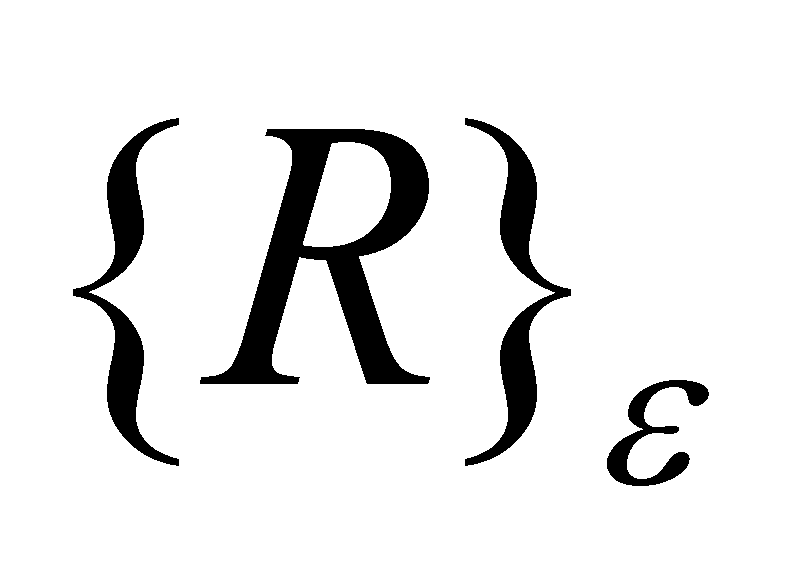
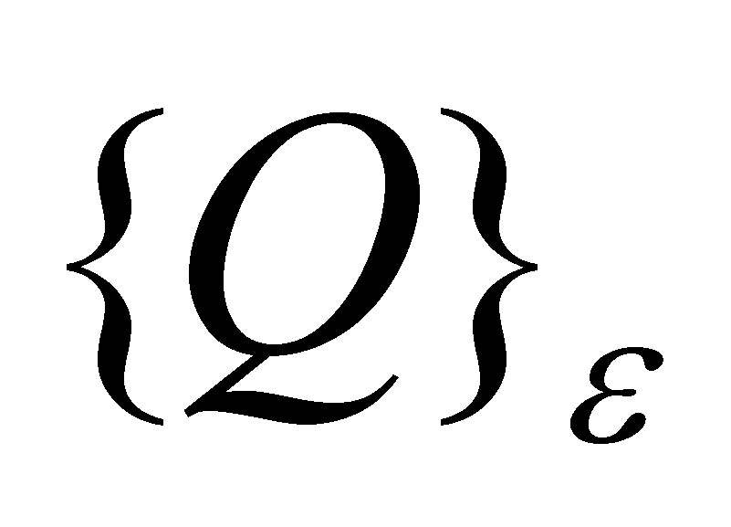
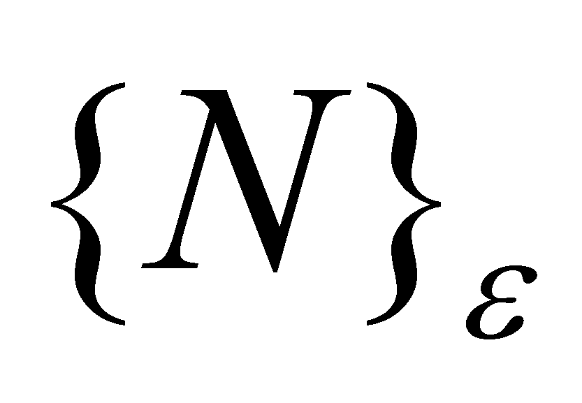
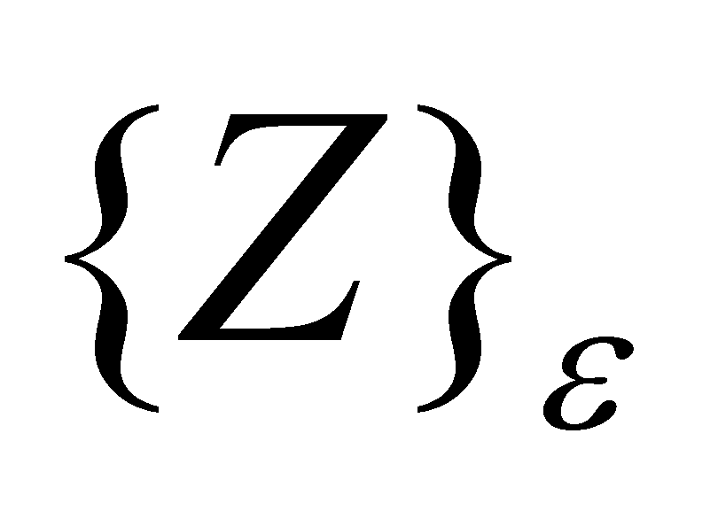
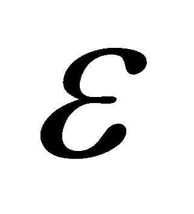

|
|
|
As we have seen in chapter 9, each class of abstract objects represents a set of objects which have the same model, set which is called support set of that class. We have also noticed that the number of support elements (the set’s cardinal) is direct proportional with the abstraction level, starting with the basic level - concrete object - which has only one element as its support.
As regards the case mentioned in the previous section, concerning the set {R} from mathematics, it is well-known that the support set of the class is infinite, both for the generic set {R} and for its particular subsets {Q},{N},{Z} etc., fact which makes impossible the comparison between the support sets of each distinct variable class. This comes from fact that according to the current mathematics, the different levels of infinite cannot be compared, although logically, we realize that a subset has fewer elements than the set which includes it. This kind of absurdity disappears in case of the set of real realizable numbers(introduced in the annex X.3), set which contains a finite number of singular values in a finite interval. In this case, a however large but finite interval of shall contain a finite number of singular values which may belong to any of the sets ,,, all of them with a finite number of elements. Thus, the cardinal of each specific set of numerical values is finite and a comparison between them may be carried out.
Comment X.23.2.1: Because the sets ,,etc. are subsets of , this means that as regards a specific non-determination interval  of the set , all the other subsets shall have the same as well.
Copyright © 2006-2011 Aurel Rusu. All rights reserved.